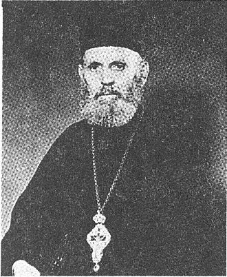
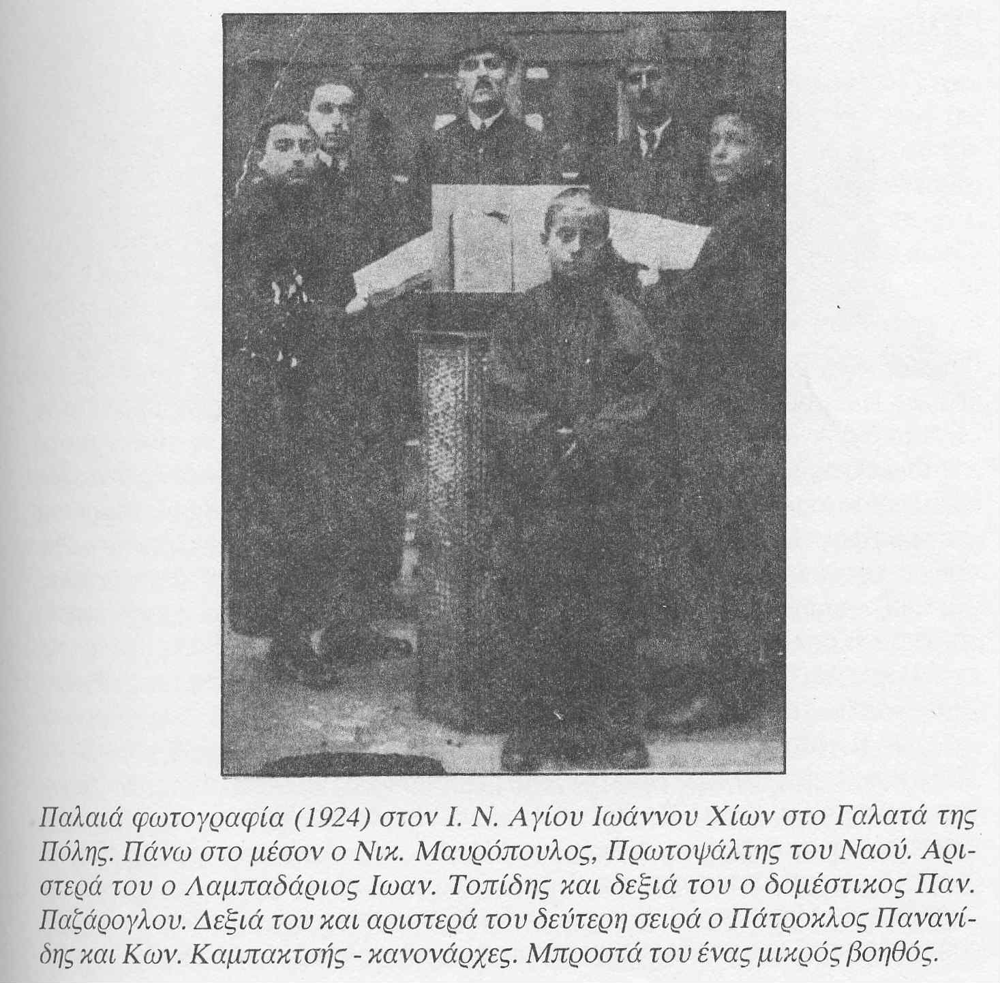

π. Νικόλαος Μαυρόπουλος / Fr. Nikolaos Mavropoulos
Άρχων Πρώτος Δομέστικος της Μ.Χ.Ε. επί Ιακώβου Ναυπλιώτη / Archon First Domestikos of
the Great Church at the time of Iakovos Nafpliotis

Fr. Nikolaos Mavropoulos (scanned from Philippos Oikonomou's book "Byzantine Ekklesiastike
Mousike Kai Psalmodia"). Click for original size.
Βιογραφικά / Biography
Άγγελος Βουδούρης, Μουσικοκριτικά (παράγραφος 198, σ. 461):
Νικόλαος Μαυρόπουλος. Εκ Μπέικος του Άνω Βοσπόρου γεννηθείς το 1888, χρηματίσας
κανονάρχης και δομέστικος παρά τω διδασκάλω Ιωάννη Βασιλειάδη εν τη Παναγία Καφφατιανή
του Γαλατά,διδαχθείς παρά του διδασκάλου τούτου και την εκκλησιαστικήν μουσικήν,
χρηματίσας είτα δεξιός ψάλτης εις την Παναγίαν Μουχλίου, εις τον ιερόν ναόν της
Κοιμήσεως της Θεοτόκου εν Πριγκήπω, εις την αγίαν Ευφημίαν Χαλκηδόνος, ως αριστερός
εις τον άγιον Ιωάννην των Χίων απέναντι του Νηλέως Καμαράδου, είτα ως δεξιός εις
την Παναγίαν του Μπεσίκταση, εντεύθεν κατά το 1915 εκλήθη εις τα Πατριαρχεία εις
την θέσην πρώτου Πατριαρχικού δομεστίκου εις διαδοχήν Δημητρίου Φωκαέως, μετά πεντάμηνον
αποχωρήσας ένεκεν στρατιωτικών υποχρεώσεων. Μετά την ανακωχήν χρηματίσας δεξιός
εις τον άγιον Ιωάννην των Χίων μέχρι της εις Ελλάδα αναχωρήσεως αυτού, νύν ψάλλων
ως πρώτος ψάλτης εν Πάτραις. (παράγραφος 199, σ. 462) Καλλίφωνος, ψάλτης καλός και
εκκλησιαστικός με εκτέλεσιν εκκλησιαστικήν, εκτελεστής πιστός των πατροπαραδότων
μαθημάτων, διατηρήσας εν το έργω αυτού την Πατριαρχικήν τάξιν εις όλα. Μιμητής γενόμενος
του ύφους του διδασκάλου Ιακώβου Ναυπλιώτου πρωτοψάλτου.
Από το βιβλίο του Φίλιππου Οικονόμου "Βυζαντινή Εκκλησιαστική Μουσική Και Ψαλμωδία" (σ. 219).
Νικόλαος Μαυρόπουλος. Διαπρεπής καλλίφωνος Πρωτοψάλτης και μουσικοδιδάσκαλος, μεέπειτα
πρεσβύτερος. Γεννήθηκε στην Κωνσταντινούπολη (προάστειο Βέικος Βοσπόρου) το 1888
και διδάχτηκε την ψαλτική τέχνη στην Πατριαρχική Σχολή όπου έίχε δασκάλους τον Άρχοντα
Πρωτοψάλτη Ιάκωβο Ναυπλιώτη, τον Άρχοντα Λαμπαδάριο Κωνσταντίνο Κλάββα, τον Γεώργιο
Παχτίκο κ.α. Διετέλεσε Λαμπαδάριος του περίφημου Νηλέα Κααράδου από τον οποίον διδάχτηκε
πολλά. Χρημάτισε επίσης και δομέστικος του Ιάκωβου Ναυπλιώτη στον Πατριαρχικό Ναό.
Έψαλε ώς Πρωτοψάλτης σε διάφορους Ι. Ναούς της Πόλης και το θέρος του 1927, μετά
τη Μικρασιατική Καταστροφή ήλθε στην Ελλάδα και εγκαταστάθηκε στην Πάτρα. Εκεί έψαλλε
ως Πρωτοψάλτης στον Ι. Ναό της Παντανάσσης όπου έψαλε μέχρι το 1945. Ακολούθως εγκαταστάθηκε
στην Αθήνα όπου έψαλε ως Πρωτοψάλτης στον Ι. Ναό Αγίου Διονυσίου Αρεοπαγίτου επί
μία πενταετία (1945-50).Το 1950 περιβλήθη το ιερατικό σχήμα και ανέλαβε εφημέριος
του Ι. ΝΑού Αγ. Παρασκευής Νέας Σμύρνης. Τόσο στην Πάτρα όσο και στην Αθήνα ως Πρωτοψάλτης
υπήρξε σπουδαίος δάσκαλος, απαράμιλλος ερμηνευτής των μουσικών μαθημάτων και αποτέλεσς
πρότυπο μίμησης για πολλούς ψάλτες κυρίως στο οκτάηχο μάθηκα "Θεοτόκε Παρθένε" του
Πέτρου Μπερεκέτη. Κατείχε στην εντέλεια την ψαλτική τέχνη και την τεχνική της ψαλμωδίας
και υπήρξε ολοκληρωτικά αφοσιωμένος στο λειτούργημά του. Υπηρέτησε το ιερό αναλόγιο
και το Ιερό Βήμα "εξ όλης της ισχύος του, εξ όλης της διανοίας του και εξ όλης της
ψυχής του". Είχε γλυκειά φωνή την οποία με άριστη τεχνική, πολλαπλασίαζε τόσο σε
εύρος όσο και σε κάλλος. Έψαλε δε με γνήσιο Εκκλησιαστικό ύφος. Διακρίθηκε ιδιαίτερα
για την καταπληκτική του ορθοφωνία ενώ εκτελούσε με υποδειγματική πιστότητα τα διαστήματα
και όλα τα σημεία ποιότητος του μουσικού κειμένου. Υπήρξε ένας πραγματικός "λειτουργός" της ιερής μουσικής μας τέχνης, ο οποίος μαζί με τον αδερφό του Δημήτριο, άφησαν
εποχή στο χώρο της Ψαλτικής Τέχνης. Πέθανε στις 23 Ιουλίου 1980.
Excerpt from Angelos Boudouris' Mousikokritika, $198-199, p. 461-462:
Nikolaos Mavropoulos was born in North Bosphorus, Constantinople in 1888. Learnt
the music from Ioannis Basileiadis, chanted in various churches [...] including
St John of Chios as a left chanter to Neleus Kamarados. In 1915 he was called in
the Patriarchate to replace the First Domerikos Demetrios Fokaeus who had resigned.
He only served 5 months because he was called in the military. After the war he
served as right chanter of St John of Chios until he migrated to become a right
chanter in Patras, Greece. Good voice, good psaltis with ecclesiastical yphos and
interpretation, faithful interpreter of the traditional mathemata. Throughout his
life he maintained the Patriarchal order in everything. He became an immitator of
the yphos of Protopsaltis Iakovos Nafpliotis.
More information from Philippos Oikonomou's book "Byzantine Ekklesiastike Mousike
Kai Psalmodia":
Fr. Nikolaos Mavropoulos was born in Constantinople in 1888. He was taught Byzantine
music at the Patriarchal School, where his teachers were Iakovos Nafpliotis, Konstantinos
Klavvas, Georgios Pachtikos and others. He became Lampadarios of Neleus Kamarados
and later on Domestikos of Iakovos Nafpliotis at the Patriarchal church. In 1927
he emigrated to Greece and became a Protopsaltis of the Pantanassa church in Patras,
where he chanted until 1945. After this he moved to Athens and was appointed a Protopsaltis
of St. Dionysios of Areopagus church where he chanted for 5 years (1945-50). In
1950 he was ordained a priest and served at St. Paraskevi of Nea Smirni (a subuerb
of Athens). In Patras as well as in Athens as a protopsaltis he was a great teacher,
unimitable interpreter of the musical mathemata and became an example for many psaltai
especially in the slow mathma "Theotoke Parthene" of Petros Bereketis. He mastered
the Psaltic Art and the Psaltic Technique in its entirety and was totally devoted
to his role. He served the Holy Analogion and the Holy Altar with "all his might
and all his mind and all his soul". He had a sweet voice which he multiplied in
width and beauty with his excellent technique. He chanted with genuine Ecclesiastical
style ("yphos"). He was distinguished for his orthophonia ("vocal technique") while
he interprete the musical intervals and the quality signs of the score with exemplary
precision. He was a true "liturgist" of our holy musical art, together with his
bother Dimitrios Mavropoulos, making history in the field of the Psaltic Art. He
passed away on the 23rd of July 1980.

Nikolaos Mavropoulos as psaltis in Galata, Constantinople (scanned from Philippos
Oikonomou's book "Byzantine Ekklesiastike Mousike Kai Psalmodia"). Click for original
size.
Ηχογραφήσεις / Recordings
Παρακαλούμε στείλτε μας περισσότερες ηχογραφήσεις του π. Νικολάου για να τις αναρτήσουμε
εδώ προς κοινό όφελος.
Please send us more recordings of Fr. Nikolaos to publish here for everyone's benefit:
"Αναστάσεως Ημέρα" Δοξαστικόν, Ήχος Πλάγιος του Πρώτου (από ραδιοφωνική εκπομπή
της Μητρόπολης Πατρών) / Doxastikon of Pascha Anastaseos Emera, Plagal First Mode
[
mp3, 1 Mb]. Broadcasted on Patras diocese radio.
"Τον Δεσπότην", Φήμη αρχαία, Ήχος Βαρύς (από τον κ. Ευάγγελο Λιναρδάκη μέσω του Βασίλη
Ζάχαρη) / Ton Despotin, Ancient Melos in Barys [
mp3, 1 Mb]. Provided by Evangelos Linardakis through Vasili Zacharis.
Αφιέρωμα στον π. Νικόλαο Ναυρόπουλο, τον αδερφό του Δημήτριο Μαυρόπουλο και τον
ανηψιό του Απόστολο Μαυρόπουλο. Από την εκπομπή "Ψαλτικής Απανθίσματα" του σωματείου
ιεροψαλτών νομού Ηρακλείου Κρήτης "Ανδρέας ο Κρήτης" που επιμελούνται οι πρωτοψάλτες
Εμμανουήλ Σουργιαδάκης και Ευάγγελος Λιναρδάκης.
(α) Εκπομπή 16 Ιουνίου 2007 [
mp3, 13.3 Mb].
(β) Εκπομπή 7 Ιουλίου 2007 [
mp3, 14.6 Mb].
Οι σπάνιες αυτές ηχογραφήσεις είναι από το αρχείο του συλλέκτη ιατρού κ. Εμμανουήλ
Χναράκη. Οι εκπομπές είναι μια ευγενική προσφορά του κ. Ευάγγελου Λιναρδάκη.
Tribute to Fr. Nikolaos, his brother Dimitrios and his nephew Apostolos. From the
radio show "Psaltikis Apanthismata" of the Association of Psaltai of Heracleion,
Crete "Andreas o Kretes", presented by the protopsaltai Emmanouel Sourgiadakis and
Evangelos Linardakis.
(a) Radio show of the 16th of June 2007 [
mp3, 13.3 Mb].
(b) Radio show of the 7th of July 2007 [
mp3, 14.6 Mb].
The rare recordings are from the private archive of the collector Dr. Emmanouel
Hnarakis. The radio shows are kindly offered to all by Mr. Evangelos Linardakis.
{kind=link}
{kind=link}